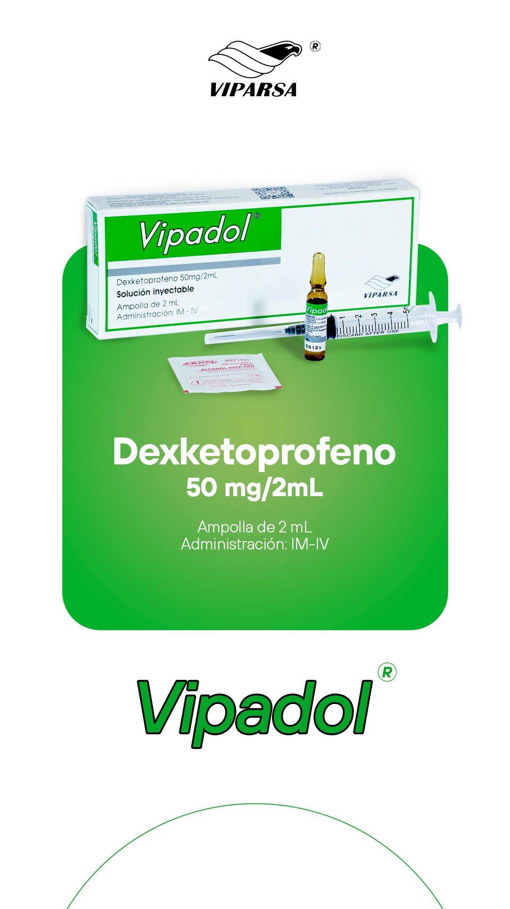

scienceCOMPOSICIÓN
Cada ampolla 2 mL contiene:
Dexketoprofeno (ag. trometamol) 50 mg
Vehículo, c.s.
Incluye jeringa descartable y toallita con alcohol.
clinical_notesINDICACIONES
Dolor agudo de moderado a intenso, cuando la administración oral no es apropiada (dolor postoperatorio, cólico renal y dolor lumbar). Está indicado para su uso a corto plazo y el tratamiento debe limitarse al período sintomático agudo (no más de 2 días), los pacientes deben adoptar un tratamiento analgésico por vía oral cuando este sea posible.
medicationDOSIS
La dosis recomendada es de 50 mg cada 8-12 horas. La dosis diaria no debe sobrepasar de los 50 mg. El dexketoprofeno está indicado para uso a corto plazo y el tratamiento debe limitarse al período sintomático agudo (no más de 2 días). O como el médico señale. Los pacientes deben adoptar un tratamiento analgésico por vía oral, cuando este sea posible.
blockCONTRAINDICACIONES
- Pacientes con hipersensibilidad al dexketoprofeno o cualquier otro AINE o alguno de los excipientes.
- Pacientes en los cuales sustancias con acción similar (p.ej. ácido acetilsalicílico y otros AINE) provocan ataques de asma, broncoespasmo, rinitis aguda, o causan pólipos nasales, urticaria o edema angioneurótico.
- Pacientes con antecedentes de hemorragia gastrointestinal o perforación relacionados con tratamientos anteriores con AINEs.
- Úlcera péptica / hemorragia gastrointestinal activa o recidivante (dos o más episodios diferentes de ulceración o hemorragia comprobados).
- Pacientes con insuficiencia renal de moderada a severa (aclaramiento de creatinina <50 mL/min).
- Pacientes con insuficiencia hepática severa (puntuación de Child-Pugh 10-15).
- Pacientes con deshidratación grave (causada por vómitos, diarrea o ingesta insuficiente de líquidos).
- Pacientes con historia de asma bronquial, con enfermedad de Crohn o colitis ulcerosa, con insuficiencia cardíaca grave, con diátesis hemorrágica y otros trastornos de la coagulación.
- Embarazo o lactancia.
priority_highREACCIONES ADVERSAS
Frecuentes: Náuseas, vómitos, dolor en el lugar de la inyección.
sync_altINTERACCIONES
Puede incrementar el riesgo de úlceras o hemorragias cuando dexketoprofeno se administra con otros AINEs, corticosteroides, anticoagulantes orales tipo dicumarínico, heparina, ticlopidina, antidepresivos, inhibidores selectivos de la recaptación de serotonina (ISRS), antiagregantes plaquetarios.
- Puede aumentar el riesgo de hemorragias con pentoxifilina y trombolíticos.
- Puede aumentar el riesgo de toxicidad de litio, metotrexato, hidantoínas, sulfonamidas, zidovudina.
- Efecto hipoglucemiante de las sulfonilúreas.
- Los niveles plasmáticos de glucósidos cardíacos.
- El riesgo de convulsiones con altas dosis de quinolonas antibacterianas.
- La nefrotoxicidad de ciclosporina, tacrolimús (debe controlarse la función renal durante la terapia conjunta).
- Los AINE no deberían usarse en 8-12 días posteriores a la administración de mifepristona pues altera su eficacia.
- El probenecid puede aumentar concentración plasmática del dexketoprofeno.
- Los AINEs pueden disminuir el efecto antihipertensivo de los Beta-bloqueantes, Diuréticos, inhibidores de la enzima de conversión de la angiotensina (IECA), antibióticos aminoglucósidos y antagonistas de los receptores de la angiotensina II (ARA II).
- El dexketoprofeno puede reducir el efecto de los diuréticos y de los antihipertensivos.
warningPRECAUCIONES Y ADVERTENCIAS
visibilityInsuficiencia hepática/renal
Los ancianos y los pacientes con insuficiencia hepática leve o moderada (puntuación de Child-pugh 5-9) o con afección renal leve (aclaramiento de creatinina 50-80 mL/min) deberán empezar con una dosis diaria total no superior a 50 mg. Administrar con precaución en pacientes de condiciones alérgicas.
gastroenterologyRiesgo gastrointestinal
Evitar la administración de dexketoprofeno junto con otros AINEs (antiinflamatorios no esteroideos) incluyendo los inhibidores selectivos de la ciclooxigenasa-2. Durante el tratamiento con AINE se han notificado hemorragias gastrointestinales, úlceras y perforaciones. El riesgo de hemorragia gastrointestinal, úlcera o perforación es mayor cuando se utilizan dosis crecientes de AINE, en pacientes con antecedentes de úlcera y en los ancianos.
cardiologyRiesgo cardiovascular y renal
Como todos los AINEs, puede elevar los niveles plasmáticos de nitrógeno ureico y de creatinina, puede asociarse a efectos indeseables del sistema renal que pueden dar lugar a nefritis glomerular, nefrítis intersticial, necrosis papilar renal, síndrome nefrótico o insuficiencia renal aguda. Precaución en pacientes con antecedentes de hipertensión y/o fallo cardíaco, en estos pacientes, la utilización de AINE puede provocar un deterioro de la función renal, retención de líquidos y edema.
dermatologyReacciones cutáneas
Muy raras veces asociadas al uso de AINEs, se han descrito reacciones cutáneas graves, algunas mortales, incluyendo dermatitis exfoliativa, síndrome de Stevens-Johnson, y necrólisis epidérmica tóxica. Debe suspenderse la administración de dexketoprofeno tras la primera aparición de una erupción cutánea, lesiones mucosas y otros signos de hipersensibilidad.
pregnant_womanFertilidad
Como otros AINEs, el uso de dexketoprofeno puede disminuir la fertilidad femenina, no se recomienda su uso en mujeres que deseen quedar embarazadas. En mujeres que presenten dificultades para concebir o en estudio por infertilidad, deberá considerarse la retirada de dexketoprofeno.
package_2PRESENTACIÓN
Ampolla de 2 mL. Incluye jeringa descartable y toallita con alcohol.
"La salud es lo primero"
Esta información es de carácter orientativo. El uso de este medicamento debe ser supervisado por un profesional de la salud colegiado.